Logical View
Table of Contents
- 1. Introduction
- 2. Logical View
- 2.2 Theorem Prover Processes Refactoring
1. Introduction
The logical view conveys the functional requirement of the system.
2. Logical View
This section of the wiki provides all the information about the logical view of the key components of the JML4 Disco.
2.1 Distributed Program Verification-Relevant Components
One of the major components of JML4 Disco is the ability to prove VCs distributively. This section of the wiki page provides all the architecturally significant design of the JML4 Disco distributed environment. The architecture adapted is the logical layering scheme presented by Fowler with a presentation layer, a domain logic layer and data source layer.
2.1.1 High-Level Design
The servers involved in Distributed Program Verification are layered as follows: in the topmost layer, the presentation layer, Java Servlets serve to marshall and demarshall the information found in Http messages passed from Client or Prover-Servers to Dispatcher. In the layer just below, the application layer, are classes relevant to the logic of distributing program verification. Beneath the application layer is the Domain layer, which contains classes pertinent to the verification itself. The following is a simple (deliberately incomplete) diagram to convey the layers with some of the more relevant classes they contain shown, followed by a more complete, intricate class diagram.
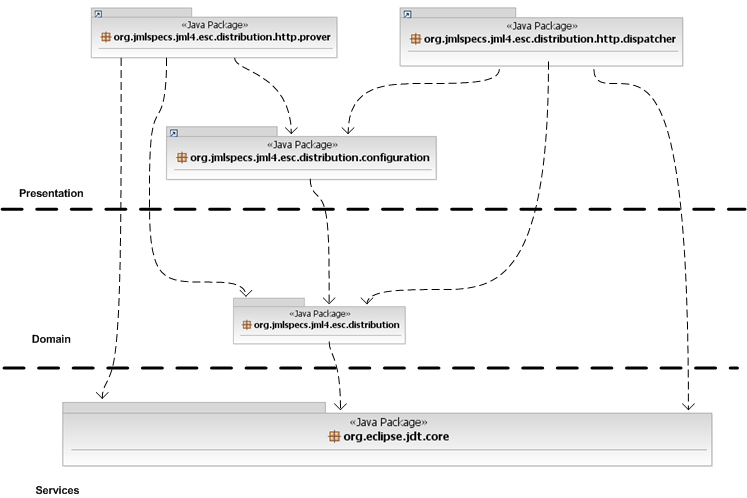
Figure 2.1.1: Layering Architectural Design of JML4 Disco Distributed Subsystem
{kind=link}
2.1.2 Class Diagram
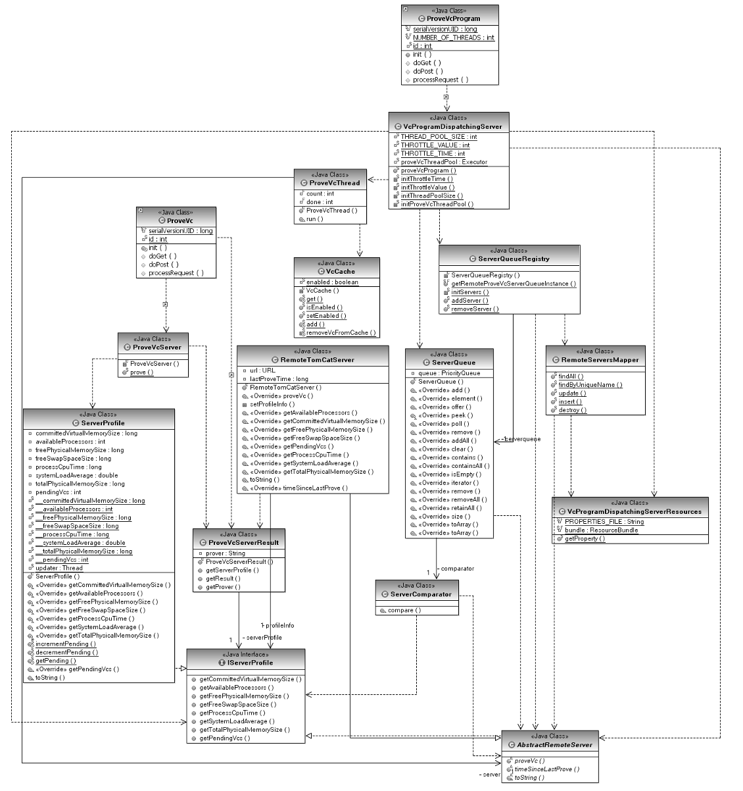
Figure 2.1.2a: Class Diagram of JML4 Disco Distributed Subsystem
{kind=link}
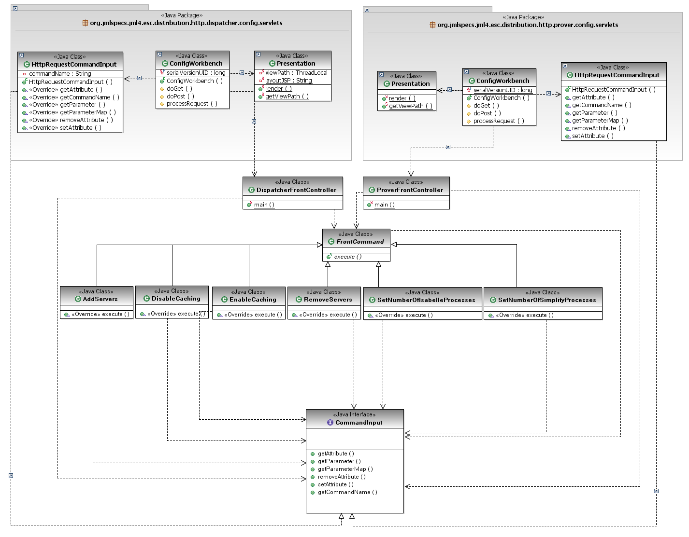
Figure 2.1.2a: Class Diagram of JML4 Disco Server's Configuration
{kind=link}

Figure 2.1.2b: Class Diagram for JML4 Disco Client's Configuration
2.1.3 Class Description
| Classes | Description |
| ProveVcProgram | This class is essentially responsible for de-marshalling messages received from a Client. As a servlet, it receives messages from a Client in the form of Http requests, which include Java-Serialized VcProgram objects. These VcProgram objects are then passed to the `VcProgramDispatchingServer?. |
| VcProgramDispatchingServer | While another class is exclusively responsible for de-marshalling VcPrograms objects received in a message, this class serves as a Facade to the rest of the Dispatching functionality. |
| AbstractRemoteServer | The AbstractRemoteServer provides some basic functionality and describes the interface for classes which will represent the protocol details involved in sending a message to a remote ProveVc Server. |
| RemoteTomCatServer | An implementation of abstract class AbstractRemoteServer, RemoteTomCatServer sends a Vc object to a remote server using HTTP protocol, expecting that remote server to be running Apache TomCat. At the end of Milestone 4, this is the only existing implementation of AbstractRemoteServer. |
| ServerQueue | This implementation of Java standard interface java.util.Queue encapsulates the logic behind load balancing. The Dispatcher only sees a queue which gives it the instance of AbstractRemoteServer most capable of receiving and responding to a message. |
| VcCache | |
| ServerComparator | This class contributes to how the ServerQueue class chooses the instance of AbstractRemoteServer most capable of receiving and responding to a message. |
| IServerProfile | Instances of AbstractRemoteServer receive IServerProfile objects as part of the responses they get from the remote machines they communicate with. |
| ProveVc | This class is essentially responsible for de-marshalling messages received from a Dispatcher. As a servlet, it receives messages from a Dispatcher in the form of Http requests, which include Java-Serialized Vc objects. These Vc objects are then passed to the ProveVcServer. |
| ProveVcServer | While another class is exclusively responsible for de-marshalling Vc objects received in a message, this class serves as a Facade to the rest of the proving functionality. |
| ProveVcThread | For each VC that is to be proved, there's is one ProveVcThread. This class provides the ability to prove multiple VC concurrently by spawnning new ProveVcThread for each vc. |
| ServerProfile | The Server Profile is a helper class for the performance data being retrieved from remote servers. This class models the remote host with its available resources and usage such as number of cores, size of memory, average CPU load, etc... |
| ServerQueueRegistry | There is only one instance of a server queue, shared by akll processes. This class is where it resides. |
| RemoteServersMapper | Responsible for writing Server objects to and from file. |
| ProveVcServerResult | Wrapper object which contains both a collection of org.jmlspecs.jml4.esc.result.lang.Result objects and server profile information. |
| VcProgramDispatchingServerResources | Wrapper class for access to the properties file in which configuration options are specified. |
| DispatcherFrontController | A front controller for the configuration of a dispatcher machine. |
| ProveFrontController | A front controller for the configuration of a prover machien. |
| FrontCommand | An abstract class which realize the command pattern, and used by the above front controller classes . |
| AddServers | Command used in the implementation of use case 12. |
| RemoveServers | Command used in the implementation of use case 13. |
| EnableCaching | Command used in the implementation of use case 15. |
| DisableCaching | Command used in the implementation of use case 16. |
| SetNumberOfIsabelleProcesses | Command used in the implementation of use case 18. |
| SetNumberOfSimplifyProcesses | Command used in the implementation of use case 18. |
2.1.4 Interaction Diagram
2.1.4.1 Proving a VcProgram
While still based on the original prototype, the latest implementation has been heavily refactored to incorporate a more scalable and maintainable design.
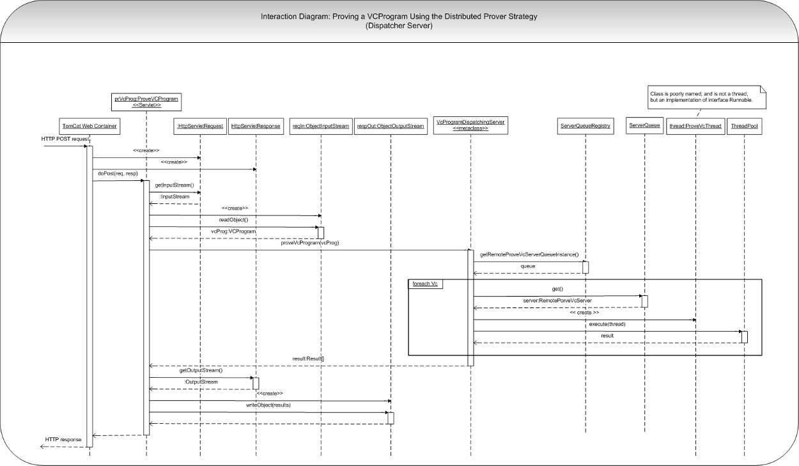
Figure 2.1.4.1 Sequence Diagram for proving a VcProgram
{kind=link}
Relevant Components
- prVcProg:ProveVcProgram - Servlet which recieves a VCProgram via an HTTP POST request and dispatches that VCProgram's VCs to be proven concurrently by remote provers.
- HttpServletRequest - Instance of Apache TomCat interface javax.servlet.http.HttpServletRequest.
- HttpServletResponse - Instance of Apache TomCat interface javax.servlet.http.HttpServletResponse.
- reqIn:ObjectInputStream - Standard Java class java.io.ObjectInputStream which - within the scope of this example - reads from the InputStream provided by the HttpServletRequest object. The data is read out of an HTTP POST request, sent by the client.
- respOut:ObjectOutputStream - Standard Java class java.io.ObjectOutputStream which - in the scope of this example - writes to the OutputStream provided by the HttpServletResponse object. The data written to the OutputStream will eventually be written to an HTTP response.
- VcProgramDispatcherServer - A 'Static class' meant to act as a facade to Prove-VcProgram-functionality, so as to separate proving logic from communication and marshaling/de-marshaling.
- ServerQueueRegistry - Since ServerQueue is an abstract class so as to make the load balancing logic transparent, the factory allows us to instantiate the queues without strong coupling.
- ServerQueue - An abstract class which will control load balancing logic. This class is abstract; concrete implementations will depend on the protocol being used to connect to a given Prove Vc Server. (see below)
- ProveVcThread - Not a Thread at all but an implementation of runnable, which contains encapsulates the logic for sending a Prove Vc Server a request asynchronously.
- ThreadPool - In the implementation there is no class 'ThreadPool.' Someone should change the diagram to make this object lifeline be an instanec of class java.util.concurrent.Executor named 'ThreadPool' for clarity.
2.1.4.2 Load Balancing
Class ServerQueue object serves to encapsulate load balancing. At the moment, it inherits the implementation of a java.util.PriorityQueue, though not the interface, via delegation; an instance of ServerQueue contains instance variable queue of type java.util.PriorityQueue to which it delegates most of its method calls.
The second instance variable of class ServerQueue is of type ServerComparator and is used by the java.util.PriorityQueue to ascertain the order in which AbstractRemoteServer objects should be in the queue.
2.1.4.3.1 In memory caching
The proposed implementation will keep track of two things. The first is which prover has proved a Vc. In this way, we can easily discard the Vc's that are proved by simplify, followed by those proved by CVC3, and finally the negation of the Vc proved by simplify.
The motivation for this is that we are unable to compute the amount of time it takes to prove a Vc. If we were to time a Vc on the dispatcher, we would be unable to take into account the workload and speed of the Server that the Vc was dispatched too, and thus the timing result we received would only pertain to that Vc being dispatched to that machine.
If on the other hand we were to time on the Server, we would run into the problem of synchronized clocks. There is no way to guarantee that the time returned would be accurate, since different clocks on different PC's may differ slightly. Additionally, this form of measurement would not take into account the time the Vc spent on the network being transmitted.
The second piece of information that we would keep track of is the least recently used Vc in the cache. For an analysis of why this is the caching algorithm, you can refer to the caching document. This piece of information would enable us to eliminate, when necessary, the least useful Vc in the cache, and replace it with the one that is trying to be cached.
The reason we are caching on the dispatcher, as opposed to the Provers is simple. All of the Vc's must go through the dispatcher, whereas only a subset of all Vc's go through any individual Prover. As a result, if the Vc's were to be cached on the Prover's it would be possible for a Vc to be dispatched to a Prover that did not have the Vc cached, while another server would have that information cached, and as the number of Prover's increased, the odds of a Vc being dispatched to the Prover with that Vc in the cache would decrease.
In the future, a distributed cache shared by all Prover's would merit investigation as an alternative to caching on the dispatcher.
2.1.4.3.2 Implementation specific details
In order to prevent heap overflows, a cap has been put on the cache, of 1 000 000 VC's. Testing has shown that heap errors occur within the vicinity of 4 000 000 - 5 000 000 cached VC's, so 1 000 000 is a number which both affords a fair number of VC's to be cached, while at the same time taking into account the danger of heap overflows.
Once the cap of 1 000 000 VC's is reached, the caching algorithm, which is a hybrid of Least Recently Used (LRU) and priority of the VC will begin to take effect. The process will be as follows: Once 1 000 000 VC's is reached, if a new VC is proven, remove a VC from the cache that was proved with simplify, and then insert the new VC into the cache. Once all of the simplify VC's are removed, we will move onto the VC's cached with CVC3, then those VC's which were only proven as negations in simplify, and once those have been removed, we will only have VC's that were proved by isabelle in the cache. Once we have reached this step, we will only remove the LRU VC from the cache.
The JML4 core has been modified to reflect the need of the cache to know which server proved a VC. The ProveVcPiecewise class in the core has had the ProveVc method overloaded to allow this information to be communicated back to the server. The impact of this change to the core is non-existent, as all other behaviour remains the same.
The following is the internal caching process of querying the cache
{kind=link}
The following is the internal caching process of adding a VC to the cache
{kind=link}
2.1.4.3 RemoteProveVcServer Implementation
Coupling has been reduced by abstracting away the logic to connect to remote Prove VC Servers into RemoteProveVcServer (an abstract class) objects. In the event that future implementations don't use TomCat / Servlet implementations, changing from one platform to another should be easier. The following is an interaction diagram representing what happens when the Thread Pool executes a ProveVcThread using a RemoteProveVcTomCatServer implementation, sending an HTTP request to a remote machine, including a Vc.
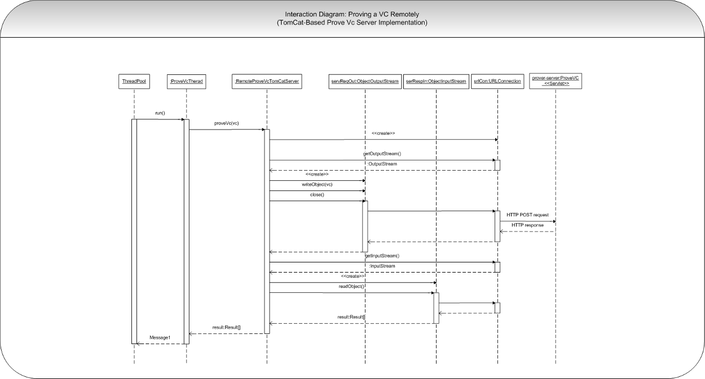
Figure 2.1.4.3 Sequence Diagram for proving a VC remotely
{kind=link}
Relevant Components
- ProveVcThread - Not a Thread at all but an implementation of runnable, which contains encapsulates the logic for sending a Prove Vc Server a request asynchronously.
- servReqIn:ObjectOutputStream - Standard Java class java.io.ObjectOutputStream which - in the scope of this example - writes to the OutputStream provided by the URLConnection object. When this ObjectOutputStream is closed, the data written to the OutputStream is written to an HTTP POST request.
- URLConnection - Standard Java class java.net.URLConnection that represent a communications link between the application and a URL, or in this instance, the remote VCProgram-Prover-Servlet ProveVCProgram.
- servRespIn:ObjectInputStream - Standard Java class java.io.ObjectInputStream which - within the scope of this example - reads from the InputStream provided by the URLConnection object. The data is read out of an HTTP POST request, sent by the remote Prove-VCProgram Servlet ProveVCProgram.
- ProveVC - This Servlet recieves a VC via an HTTP POST request and proves it using ESC4, JML4's static verification component.
2.1.4.4 Configuration Interface: Server Side
Two new features will be added to the distributed component in the form of configuration interfaces for the server machines, meant to be used by an administrator. The implementation used will be a web application, implemented using Servlets running on a Tomcat web server. As such, while the communication between remote machines during program verification may someday be able to move away from using Http to communicate, Dispatcher and Prover servers will always have to be deployed on web servers which include some Java web container, such as Apache Tomcat.
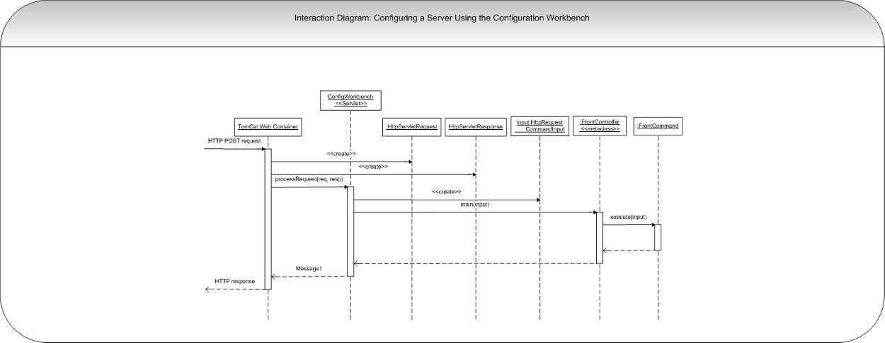
Figure 2.1.4.4 Sequence Diagram for configuring server
{kind=link}
Dispatcher Server's Web-Based Configuration Interface
A layered architecture will be used to develop the configuration interface. In the very top layer, Java Server Pages will render as views, and Java Servlets will receive Http requests and interface with the layer just below, the application layer. In the application layer there will be an interface-independent implementation of a Front Controller, as well as class definitions for Command objects. Below this layer will be the existing JML4Disco classes which will be configured.
Prover Server's Web-Based Configuration Interface
The design proposed for the Prover Server's Configuration Interface will be identical to that of the Dispatcher's. As such, classes and types common to both implementations should be reused.
2.2 Theorem Prover Processes Refactoring
2.2.1 The Simplify and Isabelle Adapters
The adapters are objects that provide bridges between java jvm and theorem prover which are external processes. The adapters deal with the actual communication with the provers' process. In this milestone, the team has decided to change the internal behavior of SimplifyAdapter and IsabelleAdapter to avoid unnecessary creation/deletion of process every time the adapters are being called. This change will improve significantly the performance of proving.
2.2.1.1 Class Diagram
No change from JML4 project. Only internal behavior of handling process was modified.
2.2.1.2 Interaction Diagram
The below diagram shows the general behavior of creating new prover's process and how to maintain process' life in a long run. Note that the behavior shown in the diagram also applied to SimplifyAdapter.
 Figure 2.2.1.2: Sequence Diagram for spawnning one process of simplify and isabelle
Figure 2.2.1.2: Sequence Diagram for spawnning one process of simplify and isabelle
- org.jmlspecs.jml4.esc.provercoordinator.prover.simplify.SimplifyAdapter
- org.jmlspecs.jml4.esc.provercoordinator.prover.isabelle.IsabelleAdapter
2.2.2 Simplify and Isabelle Process Pool
From the previous milestone, we were able to improve significantly the performance of proving by limiting only one process per theorem prover. However, this does not take advantage of the full potential of multi-core systems. Hence, during this milestone, we will aiming to generate more processes for each theorem prover (specifically for Simplify and Isabelle ESC4) in a controlled way. The following class diagram shows the changes of the Isabelle and Simplify adapters as well as new classes necessary to implement this 'process pool' concept.
2.2.2.1 Class Diagram

Figure 2.2.2.1: Sequence Diagram for process pool concept
Whenever, the adapter needs a process, it asks for a idle process by calling ProcessPool object's getFreeProcess() method. Similarly, once the adapter is no longer needed for the holding process, it release it by calling releaseProcess(Process p) method.
ProcessPool object store a list of a given prover's processes. The available processes is created on the fly (as needed) until the number of created processes hits the maximum threshold. By default, the number of process allowed is the number of core on the host machine * 2.
2.2.2.2 Classes Description
| Class | Description |
| ProcessPool | Abstract class for managing a pool of a given process |
| SimplifyProcessPool | |
| IsabelleProcessPool |
2.2.2.3 Interaction Diagram
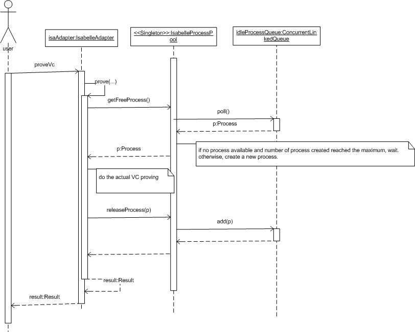
Figure 2.2.2.2: Sequence Diagram for Prover Process Pool
{kind=link}
2.3. Boogie Components
2.3.1 Class Diagram - The Boogie AST Package
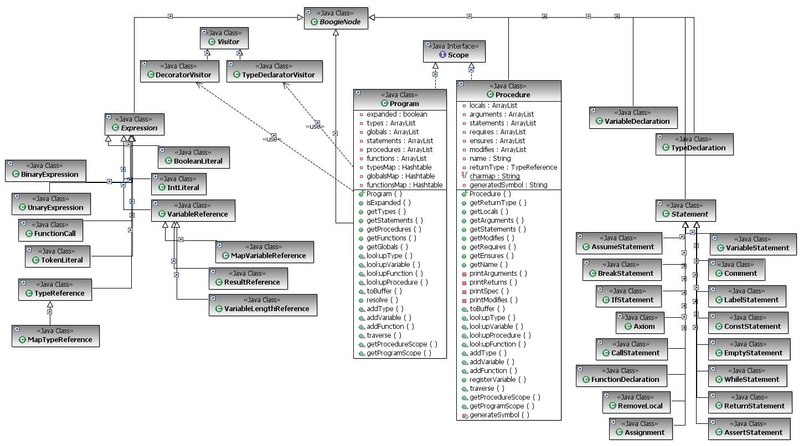
Figure 2.3.1a: Class Diagram for Boogie AST Package
{kind=link}
2.3.2 Class Diagram - The Boogie Compiler Extension Package
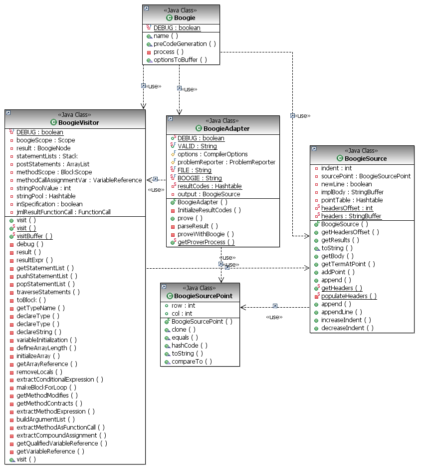
Figure 2.3.2a: Class Diagram for Boogie Compiler Extension Package
{kind=link}
2.3.2 Classes Description
Boogie:
The Boogie object is a compiler extension that enables the Java code to be passed through Boogie. For this to happen, there are two compiler options which must be toggled. jmlBoogieEnabled must be enabled and jmlEscProverStrategy must be set to "JML4BOOGIE". Boogie's preCodeGeneration method is called by Eclipse's compilation mechanism before Java bytecode is generated for output. When the function is called, it passes down the compiler object as well as the compilation unit (the unit is the root AST node of a Java source file to parse) to the BoogieAdapter through the process function.
BoogieAdapter:
The Boogie adapter is responsible for instantiating a BoogieSource object (which holds boogie source). The adapter translates from java to Boogie AST by calling the BoogieVisitor visit function which will return a Boogie AST. The adapter then traverses the Boogie AST and passes the BoogieSource object to be appended by each node's toBuffer method. The adapter is then responsible for writing the source to a temporary Boogie .bpl source file and executing it through the boogie runtime.
BoogieParser (FUTURE PLAN):
For now, there is a parser function called parseResult which resides in the boogie adapter. Error messages (results) from Boogie, return a column and row of where the mistake has occured. The parser is responsible parsing that msg and creating a BoogieSourcePoint. With the source point, it then uses the boogieSource getTermAtPoint function to map back to a particular AST node where the error originated from. Using the AST node the parser is now able to return an error msg to the problem reporter with the nth term where it occured. In the future, the Boogie Parser should be taken out of the Boogie Adapter.
BoogieVisitor:
The Boogie visitor has all the node traversal methods. It uses the visitor pattern since when the the visitor's static visit method gets called by the adapter, it gets dynamically dispatched to the proper visit method. As Java AST nodes are visited, the Boogie AST is populated in the correct order. When the visitor is done visiting the JavaAST it returns the root node of the BoogieAST (aka. ProgramNode)
The Boogie AST:
The BoogieAST is made up of several different types of nodes. Every Boogie node represents the equivalent syntactic element in the Boogie grammar. ex
The statement: "var x: int" is represented by the node BoogieStatement. The nodes are generally split into the following types:
- Expressions: Represent the equivalent expressions in the Boogie syntax.
- Statements: Represent the equivalent statements in the Boogie syntax.
The Boogie Nodes are also responsible for appending boogie source to the BoogieSource object passed to it by the BoogieAdapter. Each node has a toBuffer method that will handle translating the node and it's children to Booge source.
BoogieSource:
The BoogieSource object is responsible for holding boogie source code which will in tern be written to a temporary file and passed to Boogie runtime by the adapter. The object also holds a table called boogieTable which maps BoogieSourcePoints to particular AST nodes. It is necessary to have this mapping so that when boogie returns an error message with a particular BoogieSourcePoint ( a column and a row in the boogie source) we can map backwards to a particular AST node. This mapping occurs whenever Boogie source is appended.
BoogieSourcePoint
A Boogie Source Point holds a row and column. It also has a compare method. It primarily used by the BoogieSource object to map points in boogie to AST nodes.
2.3.4 Interaction Diagrams
2.3.4.1 Boogie and BoogieAdapter
The following diagram shows the general behavior of how the Boogie compiler extension traverses the Java AST using a BoogieVisitor, translates it into a BoogieNode AST and passes the resulting Boogie source code to a Boogie runtime for processing.
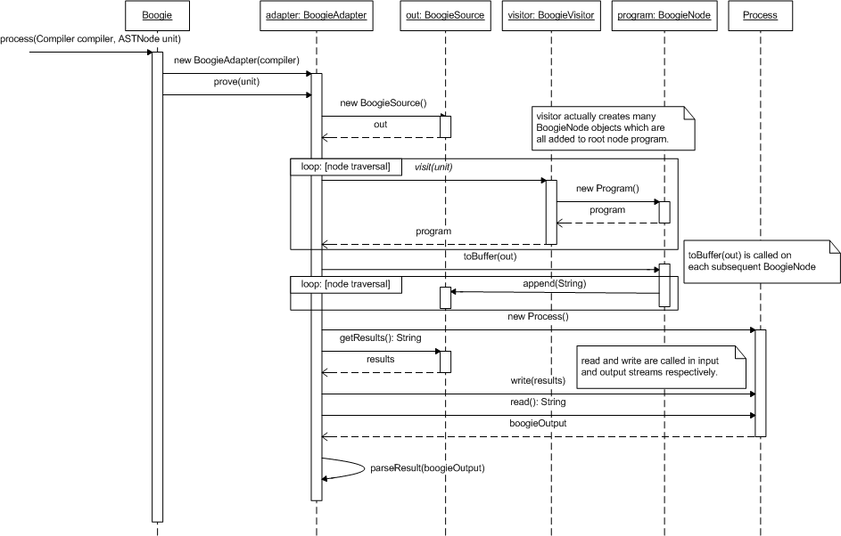
Figure 2.3.4.1 Sequence Diagram for BoogieVisitor behavior
{kind=link}
2.3.4.2 BoogieSource
Here we see how the BoogieSource object gets appended. It internally delegates to a string Buffer but also contains a map of boogiePoints to map the Java source (AST terms) to Boogie code.
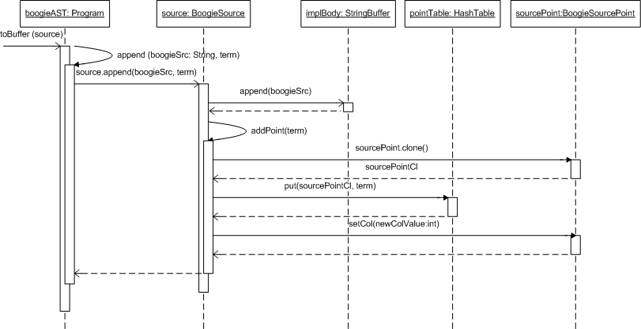
Figure 2.3.4.2 Sequence Diagram for BoogieSource behavior
{kind=link}